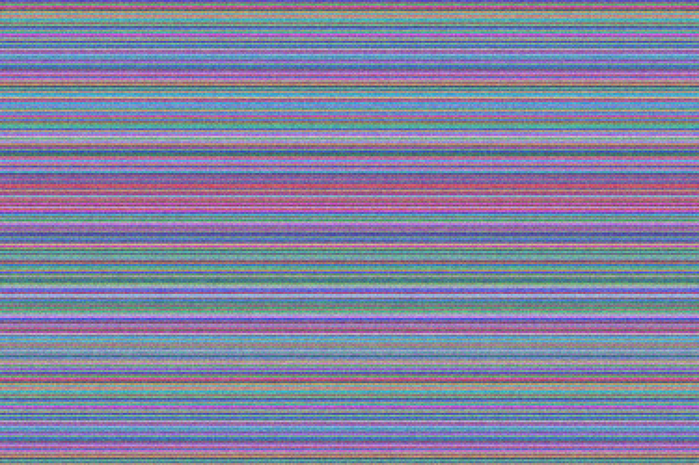

Сети и СКС
Проектирование, монтаж и сертификация структурированных кабельных систем, магистральные каналы связи, резервирование.
Проектируем и строим сети связи, СКС и центры обработки данных, внедряем системы видеонаблюдения и диспетчеризации. Этот сайт — современная редакция архива старого сайта: та же информация, легче, быстрее, доступнее.
Смотреть услуги Документы компании
Проектирование, монтаж и сертификация структурированных кабельных систем, магистральные каналы связи, резервирование.
Опыт от АТС до современных ЦОД — перенесён из архива old-site.
Картинки обработаны optimize_images.py: WebP/AVIF, ресайз, удаление EXIF/GPS.
IP-камеры, хранение архива, интеграция с СКУД и диспетчеризацией.
Инженерные системы: охлаждение, ИБП, мониторинг, защита от НД.
Загрузил-файлы-страницы-от-старого-сайта.